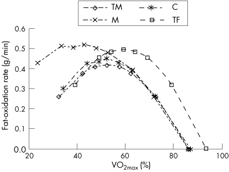

How to fuel in cycling, myth BUSTED!
Every cycling daddy I know in the week-end goes out for 150k rides without eating…
Carb the fuck up
You might think that during low-intensity rides (regular pace for a >100k ride), your body primarily burns fat for fuel. While there’s truth to this, recent evidence suggests that even at low intensities, carbohydrates play a significant role in fueling your ride. Let’s break it down with some math:
Consider a comfortable Zone 2 (Z2) ride, averaging 200 watts for 2 hours. Multiplying power by time gives us energy, and considering cycling’s efficiency (about 25%), we arrive at:
$$Energy = 200w*(2\times60\times60)s \times4=5760kJ$$
Pro triathletes can oxidize fatty acids at a rate of 0.45 g/min. Calculating the energy produced by fat oxidation:
values taken from this research: https://www.ncbi.nlm.nih.gov/pmc/articles/PMC2465139/

Comparison of the relationship of fat‐oxidation rate (g/min) and the relative work intensity (% VO2max) of the different groups studied. C, road cyclists; M, mountain bikers; TF, female triathletes; TM, male triathletes.
$$FatEnergy = 0,45g/min\times60min\times2h\times9kcal/g = 486kcal = 2034kJ$$
The difference in energy is substantial:
$$OtherEnergy = 5760kJ-2034kJ = 3726kJ = 890kcal$$
This energy is primarily derived from carbohydrates!!. We can calculate the amount used:
$$Carbs = 890kcal/4,2kcal/g = 211g$$
Conlusion: even during a comfortable Z2 ride, we’re tapping into approximately 200g of glycogen. This underscores the importance of fueling up with carbs during rides, especially considering our limited glycogen stores.
Fuel protocol
For those of us who train extensively (more than 10 hours a week), fueling during every ride becomes important. Since we burn roughly 100g of carbs per hour, replenishing with at least 60g/h of carbs is essential. During intense rides or races, this figure can go as high as 130g/h, but remember, your gut needs to be trained for this! (big pro cyclist can reach 180g/h, crazy!) The most convenient way to consume carbs is by mixing them with water in your bottles. This eliminates the need to carry solid food in your pockets. Consider having two bottles—one with a concentrated carb solution and the other with plain water. Alternate sips between the two for optimal hydration and fueling.
Now, onto the carbs themselves. Recent research suggests that a mix of maltodextrin (glucose polymer) and fructose in a 1:0.8 ratio offers the best absorption rates. If you have 1000g of maltodextrins, simply multiply the weight by 0.8 to determine the required amount of fructose.
https://pubmed.ncbi.nlm.nih.gov/26373645/
This mix boasts the best absorption rate as the two sugars utilize different pathways in the gut. Additionally, it’s convenient to make your ow‘n blend. Maltodextrin, commonly used in ice cream production, is inexpensive and readily available. Fructose can be found in any grocery store. I personally made my own mixture about a month ago, spending just €20 for 2.5 kg of fuel. Quite the bargain- 1 In conclusion, embrace the carb-rich goodness to fuel your rides effectively. While sucrose works, a mix of maltodextrin and fructose reigns supreme. Enjoy your cycling adventures, and remember to keep those energy levels up!